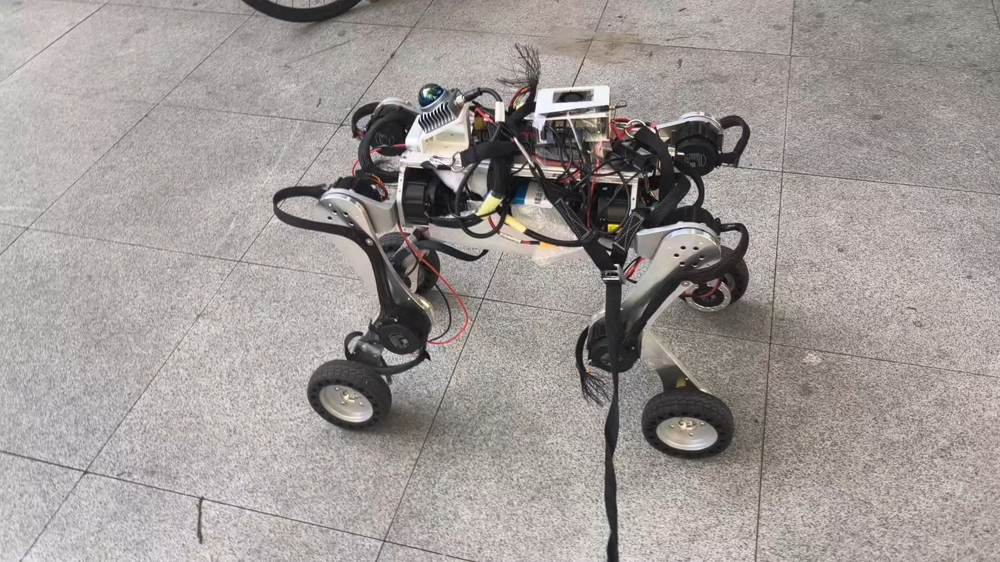
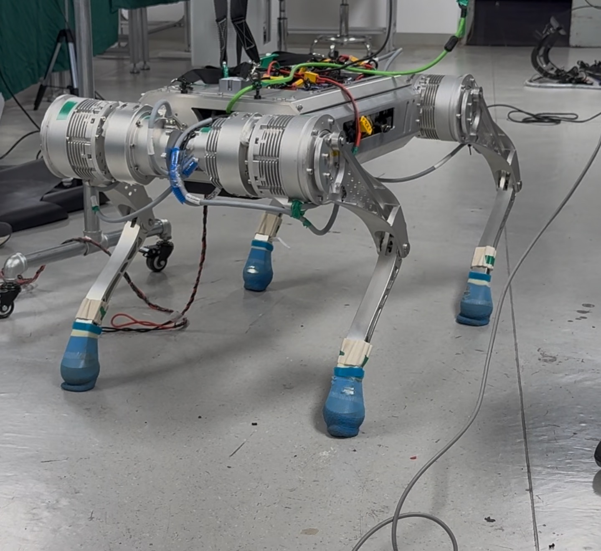
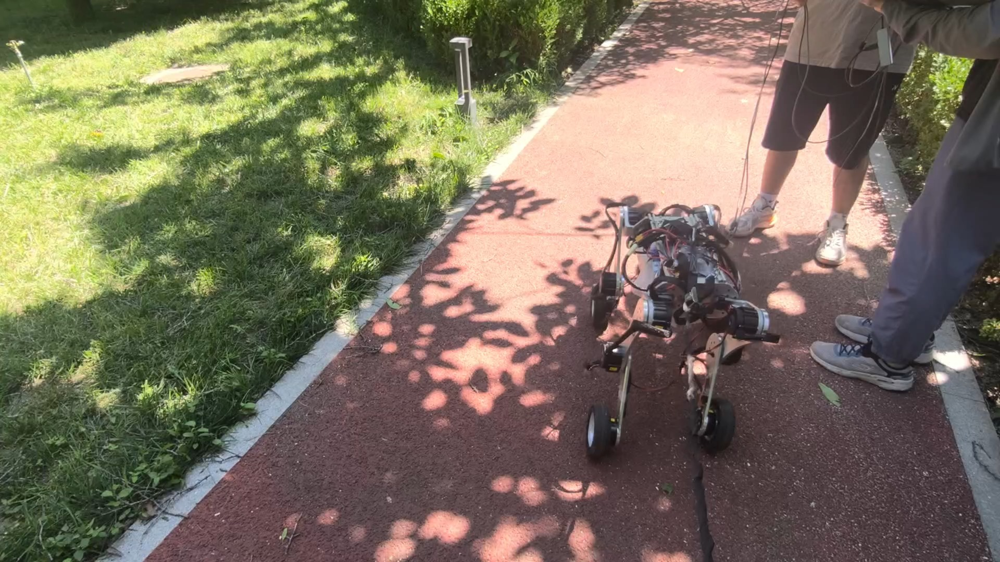

Robotics Research Portfolio
Wang Gufan
Real-robot control
& locomotion.
I work on learned locomotion and the real-time systems that bring policies from simulation onto physical robots.


Selected hardware work
Two real-robot control projects.
Policy deployment, control-system integration, and hardware validation.

25 kg wheel-legged robot
Learning-based locomotion with a synchronized dual-MCU CAN control stack.
55 kg EtherCAT quadruped
EtherCAT torque-control integration and joint-level diagnosis of Sim2Real mismatch.
From deployment to research
What I want to study next.
How should a controller respond when the model, sensing, or timing differs from what simulation assumes?
Research interests and possible methods- 01Timing-aware state estimation
How can timestamps, action history, jitter, and missed cycles inform a current-state estimate?
- 02Failure-adaptive control
When should uncertainty change an RL or MPC controller's action, speed, or risk level?
- 03Hybrid locomotion on hardware
How do contact changes, wheel motion, and real transport delays interact in a complete loop?